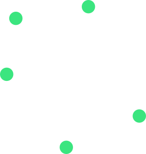

Topological Methods in Shape Reconstruction and Comparison
Sushovan MAJHI
Tulane University (March 10, 2020)

Scan the above QR or hit the following url: smajhi.com/*-presentation
Project Timeline
- 2016 Carola's talk on trajectory-based Map Construction
- Jan, 2017 Proposed topological map construction
-
Nov, 2017
Topological and Geometric Reconstruction of Metric Graphs in $\mathbb{R}^N$
Fall Workshop on Computational Geometry 2017, Stony Brook, NY - Nov, 2018 Topological and Geometric Reconstruction of Geodesic Subspaces of $\mathbb{R}^N$
- May, 2019 JS-Based Webapp for visualization software
Collaborators

Carola Wenk
Computer Science, Tulane

Brittany Fasy
Computer Science, Montana State

Rafal Komendarczyk
Mathematics, Tulane
Shapes


Manifolds (the good ones)


Non-manifolds (the bad ones)
Our shapes of interest (the ugly ones)
Problem Statement
We aim to reconstruct an unknown shape $X$.- $X$ is a (compact) non-manifold
- $X$ is a geodesic space
- We have a sample or a point-cloud $S$ represented as a metric space$(S,d_S)$
- $S$ is expected to be "dense" in $X$
Shape ⟶ Sample

continuous object ⟶ Array of rgb pixels

Road ⟶ GPS locations
Map Reconstruction
Let $G$ be the unknown map of a city.- $G$ is an embedded graph
- $G$ has the shortest-path metric
- $S$ is the GPS locations of cars
- $S$ is reasonably close to $G$
Data ⟶ Shape
Vietoris-Rips at scale $\epsilon>0$
 ⟶
Manifold Reconstruction
(Adams H. et al.)small $\epsilon$ + dense sample
=
Rips complex is a good reconstruction for manifolds
Graph Reconstruction
small $\epsilon$ + dense sample trickdoes not work
😢
The Reconstruction Library
- I call it Shape Reconstruction
- Language: JavaScript
- Platform: (modern) Web Browsers
- Hosted on Github
This Presentation
- The framework is called RevealJS
- Language: JavaScript
- Platform: (modern) Web Browsers
- Latex Support: MathJax
- Features: Multiplexing, Notes, Timer, Autoslide, and more.
🤔
The Manifesto
- Introduction to Shape Comparison
- Hausdorff Distance
- Gromov-Hausdorff Distance
- Computing the Gromov-Hausdorff Distance
-
Questions ,Discussions , and 🍕Pizza .
Collaborators
Carola Wenk
Computer Science, Tulane

Jeffrey Vitter
Computer and Information Science, University of Mississippi
Motivation

circle

triangle

triangular

circular


Map Construction from GPS data (Berlin)
https://mapconstruction.org
Shape Comparison
We need an appropriate notion of a distance measure $d_?(X,Y)$ so that
- $d_?(X,Y)$ defines a pseudo-metric on the class of metric spaces.
- $d_?(X,Y)$ large $\iff$ very different shape
- $d_?(X,Y)$ small $\iff$ $X=Y$ up to a class of deformation.
Hausdorff Distance

Nearest neighbor distance (red points $\to$ green points).
- $d^Z_H(X,Y)\geq0$,
- $d^Z_H(X,Y)=d^Z_H(Y,X)$,
- $d^Z_H(X,Y)=0\iff X=Y$, and
- $d^Z_H(A,C)\leq d^Z_H(A,B)+d^Z_H(B,C)$.
💡
$d_H$ is sensitive to Shape + Size + Placement.
Hausdorff under Isometry
$d_H($◤, ◢ $)=$ large.
- For $N=1$, $T$ is translation or reflection.
- For $N=2$, $T$ is rotation, translation or reflection.
💡
$d_{H,iso}$ is sensitive to Shape + Size +
$d_{H,iso}($◤, ◢ $)=0$.
Gromov-Hausdorff Distance
How to compare shapes that do not have a common embedding?

Isometric Embedding
$d_{GH}$ vs $d_{H,iso}$
Computing $d_{GH}$
💡
Computing an
💡
$d_{H,iso}$ approximates $d_{GH}$ with an approximate factor of $\left(1+\frac{1}{4}\right)$.
This Presentation
- The framework is called RevealJS
- Language: JavaScript
- Platform: (modern) Web Browsers
- Latex Support: MathJax
- Features: Multiplexing, Notes, Timer, Autoslide, and more.
QUESTIONS.